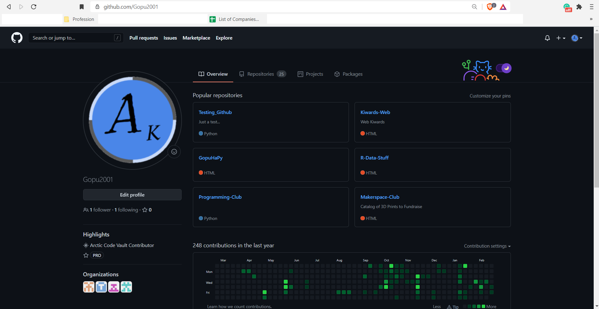
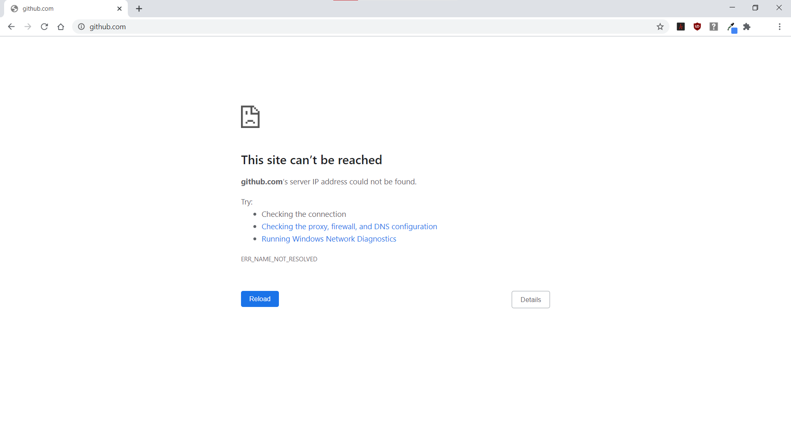

Problem Description
What is GitHub?
As a developer, open sourcing your code is all the rage. It helps beginner and amateur developers gain skills and get noticed in the professional community, while also helping recruiters determine if an individual is up to a certain task and a good fit for a certain role they are hiring for.
GitHub plays a major role for this kind of communication between the individual looking for a job and recruiting companies looking to hire individuals with valuable skills. In fact, because GitHub is used so much, countless companies require that job applicants use a GitHub account and profile to share their accomplishments and code projects they have started and completed.
An example user profile page on GitHub
The GitHub Website can be accessed by clicking here or copying and pasting the URL https://github.com/ in your web browser's address bar.
Under a typical secondary school administration network, this is what it looks like when attempting to access GitHub.
Despite having all of these countless benefits, why do some schools, particularly school districts that teach high school and middle school students ban the use of GitHub on their network server? There's a simple reason for that:
UNCERTAINTY
An Introduction to Uncertainty
According to the book Essentials of ECONOMICS Seventh Edition written by John Sloman and Dean Garratt, when people are faced with making choices based on what they perceive are the consequences of such choices, they are faced with the uncertainty of what will happen in the future that may be affected by such a decision. Similar to buying a new mobile phone that lasts for 5 or so years, writing a rule in a rulebook is filled with uncertainty as to how users who abide by the rulebook will act (page 65). Just like the colors in the background of this website, you do not know which color will appear when you reload the page or even the next couple seconds.
According to Sloman and Garratt, "the more pessimistic we are, the more cautious we will be" (page 66) when it comes to understanding how people react to uncertainty. In terms of economics, this leads the rule makers to determine that the optimal method is to err on the side of pessimism.
Glossary
- developer: one who programs software / hardware
- open source: where anyone and everyone has access to (read-write-copy) everything someone posts open-source
- uncertainty: when an outcome may or may not occur and the probability of its occurrence is not known